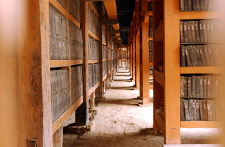

경전은 모든 존재현상의 연기성을 여러 방법으로 설한다. 대상은 같다 하더라도 상황에 따라 다른 설명이 필요하기 때문이다. 포괄적이고 종합적인 방법으로 설하기도 하고, 세부적이고 분석적인 방법으로 설하기도 한다.
예를 들면, 자연과학도들에게는 물질을 위주로 한 분석적인 접근이 쉬울 것이고, 인문학도들에게는 정신을 위주로 한 종합적인 설명이 더 설득력이 있을 것이다.
일체법을 이해하는 사람의 성향이나 능력, 또는 수준에 따라 다른 설명들이 필요 한 것이다. 일체법의 분류 방법 가운데 초기경전에 가장 일반적이고 구체적으로 언급하는 것은 5온, 12처, 18계이다. 정신적인 면에 초점을 맞추어 설명하는 것은 5온이며, 물질적인 면에 초점을 맞춘 것은 12처이다. 또한 정신과 물질 두 가지에 초점을 맞춘 것은 18계라고 한다. 어디에 초점을 맞추었던 상관없이 부처님께서 5온, 12처, 18계를 설하신 목적은 물질과 정신이 모두 영구불변하는 실체가 아니라, 연기하는 존재임을 확인시켜 주기 위함이다.